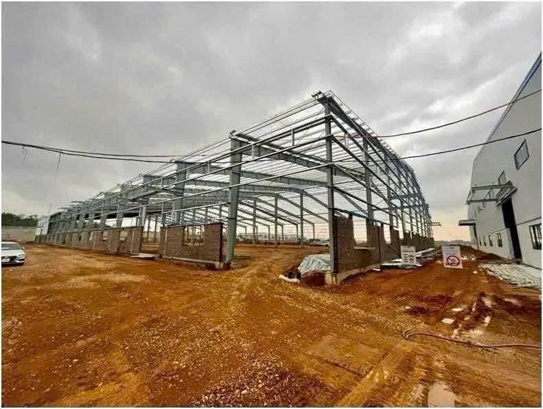
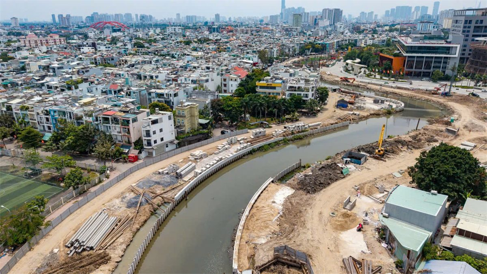
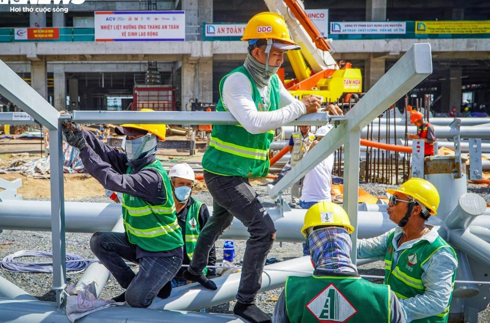

Công trường xây dựng luôn tiềm ẩn nhiều nguy cơ mất an toàn, từ làm việc trên cao, lắp dựng giàn giáo đến vận hành máy móc và nâng hạ vật liệu. Những vụ tai nạn lao động xảy ra trong năm 2026 tiếp tục gióng lên hồi chuông cảnh báo về những thiếu sót trong tổ chức và giám sát thi công. Trước thực tế đó, chủ động kiểm soát rủi ro, tuân thủ quy định pháp luật và trang bị phương tiện bảo hộ lao động cho công nhân là những nhiệm vụ cần thiết, cấp bách nhằm bảo vệ tính mạng và sức khỏe người lao động.
Những vụ tai nạn tại công trường gióng lên hồi chuông cảnh báo
Trong hoạt động xây dựng, người lao động thường xuyên phải làm việc trong điều kiện phức tạp, với nhiều hạng mục được triển khai đồng thời. Thi công trên cao, lắp dựng giàn giáo, vận hành máy móc, nâng hạ vật liệu hay thi công hệ thống điện đều tiềm ẩn nguy cơ tai nạn nếu không được kiểm soát chặt chẽ.
Thực tế đã ghi nhận nhiều vụ tai nạn nghiêm trọng tại các công trình xây dựng. Điển hình, khoảng 16h ngày 16/5/2026, tại Cụm công nghiệp Vạn Xuân, tỉnh Phú Thọ, một công nhân tử vong khi đang thi công lắp đặt mái tôn nhà xưởng ở độ cao hơn 12 m.

Theo thông tin từ Công an tỉnh Phú Thọ được công bố ngày 22/7/2026, thời điểm xảy ra sự việc, thời tiết xuất hiện gió lớn. Công nhân B.V.H. đã tháo dây đai an toàn khỏi kết cấu mái. Khi một tấm tôn bị gió hất lên, người này mất thăng bằng, rơi từ độ cao khoảng 12,3 m xuống nền công trình và tử vong. Quá trình điều tra xác định, người trực tiếp tổ chức thi công không thực hiện đầy đủ việc huấn luyện, hướng dẫn quy trình an toàn và thiếu kiểm tra, giám sát công nhân. Cơ quan điều tra đã khởi tố vụ án, khởi tố bị can đối với giám đốc doanh nghiệp liên quan để điều tra về hành vi vi phạm quy định về an toàn lao động.
Một vụ việc khác xảy ra vào khoảng 17h20 ngày 21/8/2026 tại công trình thuộc dự án rạch Xuyên Tâm, phường Bình Lợi Trung, TP.HCM. Trong quá trình thi công chỉnh cừ bê tông, một cây cừ bất ngờ ngả đổ, đè trúng công nhân N.V.N. khiến người này tử vong sau khi được đưa đi cấp cứu. Theo thông tin ban đầu, vụ việc xảy ra khi công nhân phối hợp với người điều khiển xe cẩu thực hiện thao tác chỉnh cừ. Cơ quan công an đã tiến hành điều tra, làm rõ nguyên nhân tai nạn.

Hai vụ việc với những tình huống khác nhau cho thấy nguy cơ tai nạn có thể xuất hiện ở nhiều công đoạn thi công. Nếu không kiểm soát tốt điều kiện làm việc trên cao, sự ổn định của cấu kiện, thiết bị nâng hạ và phạm vi hoạt động của máy móc, hậu quả có thể đặc biệt nghiêm trọng.
Ba quy định pháp luật trọng tâm về an toàn trong thi công xây dựng
Trước những nguy cơ hiện hữu, pháp luật về xây dựng đã quy định rõ trách nhiệm bảo đảm an toàn trong quá trình thi công công trình. Trong đó, ba nhóm quy định cần được chú trọng.
Thứ nhất, bảo đảm an toàn khi làm việc trên cao. Theo Mục 2.7.1.1 QCVN 18:2021/BXD, người sử dụng lao động phải thực hiện biện pháp phòng ngừa ngã đối với người làm việc ở độ cao từ 2 m trở lên. Các vị trí nguy hiểm cần có lan can, tấm chặn chân hoặc dây an toàn theo quy định. Đây là yêu cầu quan trọng đối với hoạt động thi công mái nhà, giàn giáo và công trình cao tầng.
Thứ hai, trang bị đầy đủ phương tiện bảo vệ cá nhân. Theo Mục 2.19.1.1 QCVN 18:2021/BXD, người sử dụng lao động phải trang bị phương tiện bảo vệ phù hợp với tính chất công việc và môi trường làm việc. Các thiết bị như mũ, kính, găng tay, giày bảo hộ và dây an toàn cần được lựa chọn đúng mục đích, kiểm tra thường xuyên và thay thế khi hư hỏng.
Thứ ba, xác định trách nhiệm của nhà thầu và chủ đầu tư. Theo Điều 51 và Khoản 2 Điều 61 Luật Xây dựng số 135/2025/QH15, nhà thầu có trách nhiệm bảo đảm an toàn và xây dựng biện pháp thi công phù hợp; chủ đầu tư phải giám sát, yêu cầu khắc phục hoặc đình chỉ thi công khi phát hiện nguy cơ mất an toàn.
Ba nhóm quy định trên cho thấy bảo đảm an toàn lao động không chỉ phụ thuộc vào ý thức của công nhân mà còn đòi hỏi sự chủ động trong tổ chức, trang bị và giám sát của các đơn vị liên quan.
Trang bị bảo hộ lao động – nhiệm vụ cần thiết và cấp bách
Công tác bảo đảm an toàn lao động cần được chú trọng ngay từ khâu tổ chức thi công. Các đơn vị xây dựng cần đánh giá những nguy cơ có thể xảy ra tại từng khu vực, bố trí nhân lực phù hợp và phổ biến quy trình làm việc an toàn trước khi triển khai. Người lao động cũng cần được hướng dẫn nhận diện rủi ro, tuân thủ quy trình và sử dụng phương tiện bảo vệ cá nhân đúng cách.
Bên cạnh đó, việc kiểm tra hiện trường cần được duy trì thường xuyên nhằm kịp thời phát hiện những yếu tố có thể gây tai nạn. Các hạng mục như giàn giáo, sàn công tác, hệ thống điện và thiết bị nâng hạ phải được kiểm tra trước khi đưa vào sử dụng. Những khu vực có nguy cơ sạt đổ, vật liệu rơi hoặc va chạm máy móc cần được cảnh báo, khoanh vùng và hạn chế người không có nhiệm vụ tiếp cận.
Đặc biệt, khi xuất hiện dấu hiệu bất thường hoặc điều kiện thi công không bảo đảm, đơn vị phụ trách cần chủ động tạm dừng công việc để kiểm tra và xử lý. Nhà thầu cần nâng cao trách nhiệm quản lý, giám sát, đồng thời xây dựng ý thức chấp hành quy định an toàn cho từng công nhân. Đây là những yếu tố quan trọng góp phần hạn chế tai nạn, bảo vệ tính mạng và sức khỏe người lao động, đồng thời bảo đảm tiến độ thi công.

Kiểm soát rủi ro phải bắt đầu từ khâu tổ chức thi công
Bên cạnh việc trang bị phương tiện bảo hộ, công tác phòng ngừa tai nạn cần được triển khai đồng bộ ngay từ khâu lập kế hoạch và tổ chức thi công. Trước mỗi hạng mục, đơn vị phụ trách cần nhận diện những yếu tố có thể gây tai nạn, đánh giá mức độ rủi ro và xác định biện pháp kiểm soát phù hợp với điều kiện thực tế.
Đối với khu vực làm việc trên cao, giàn giáo và sàn công tác cần được kiểm tra trước khi đưa vào sử dụng. Những vị trí có nguy cơ ngã hoặc rơi vật liệu phải được kiểm soát, cảnh báo và hạn chế người không có nhiệm vụ tiếp cận. Tương tự, khu vực vận hành máy móc, thiết bị nâng hạ cần được phân định rõ ràng, tránh tình trạng người lao động di chuyển vào phạm vi hoạt động nguy hiểm.
Đặc biệt, đối với những công việc có nguy cơ cao như lắp đặt mái tôn, nâng hạ cấu kiện, thi công cừ bê tông và làm việc trên giàn giáo, đơn vị thi công cần xây dựng phương án làm việc an toàn cụ thể. Việc kiểm tra điều kiện thời tiết, tình trạng thiết bị, kết cấu và phương tiện bảo hộ trước khi bắt đầu công việc cần được thực hiện nghiêm túc. Khi phát hiện dấu hiệu bất thường, hoạt động thi công phải được tạm dừng để kiểm tra và xử lý.
Công tác kiểm tra hiện trường cũng cần được duy trì thường xuyên, đặc biệt khi có sự thay đổi về mặt bằng, tiến độ hoặc phương án thi công. Những dấu hiệu bất thường như kết cấu thiếu ổn định, thiết bị hoạt động không bình thường, hệ thống điện không bảo đảm hay vật liệu bố trí cản trở lối đi cần được phát hiện và xử lý kịp thời.
Bên cạnh trách nhiệm của nhà thầu và người giám sát, người lao động cũng cần được phổ biến đầy đủ về đặc điểm công việc, các nguy cơ có thể gặp phải và quy trình xử lý khi phát hiện tình huống mất an toàn. Việc tuân thủ hướng dẫn, chủ động thông báo nguy cơ và không tiếp tục thực hiện công việc khi điều kiện an toàn chưa được bảo đảm là những yếu tố góp phần hạn chế tai nạn tại công trường.
An toàn lao động không thể chỉ dừng ở khẩu hiệu
Bảo đảm an toàn lao động là yêu cầu xuyên suốt trong toàn bộ quá trình thi công xây dựng. Việc trang bị phương tiện bảo hộ, kiểm soát rủi ro và thực hiện đúng quy định pháp luật cần được triển khai đồng bộ, gắn với điều kiện làm việc thực tế tại mỗi công trường.

Trách nhiệm này cần có sự phối hợp giữa chủ đầu tư, nhà thầu, đơn vị quản lý và người lao động. Mỗi bên cần thực hiện đúng vai trò của mình, từ tổ chức thi công, kiểm tra giám sát đến chấp hành quy trình và sử dụng phương tiện bảo hộ.
Đưa an toàn lao động trở thành yêu cầu thường trực trong hoạt động xây dựng không chỉ góp phần bảo vệ tính mạng, sức khỏe người lao động mà còn nâng cao chất lượng công trình, bảo đảm hiệu quả thi công và hướng tới sự phát triển bền vững của ngành xây dựng.